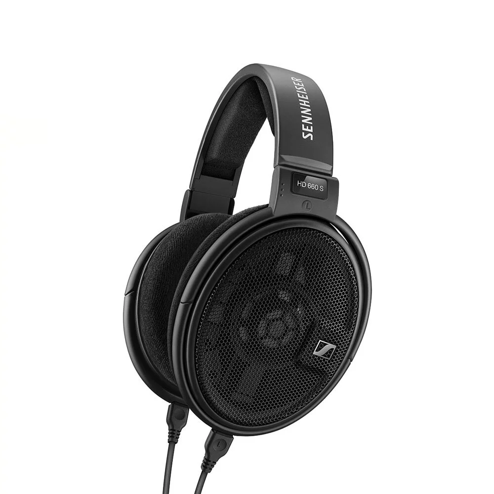

耳機類型
耳機類型
耳機依需求和場合發展出了許多不同的類型，無論是最初的專門用於電話的耳機，抑或是錄音式的監聽耳機，或是現在流行的無線耳機，無論你的需求是什麼市場上總是找的到一款可能可以滿足你需求的耳機。
接下來就讓我依開放程度，外型，以及連接設備的方式分為三組來討論。
開放程度:
首先我們將耳機分為:

開放式耳機的外殼通常會使用網狀可透聲的材質，高音表現出色，適合喜歡聆聽女性聲樂尤其是女高音的人。
但隔音不強，外部噪聲容易進入，旁邊的人也容易聽到耳機的音樂，需要特別注意音量，以免干擾到其他人。
耳機範例: Sennheiser HD 660S
封閉式耳機:
封閉式耳機外面部份是整片封閉起來的類型，可牢牢地將外部的噪音隔絕。隔音效果比開放式耳機好很多，少了環境音的干擾是可以好好純粹欣賞音樂的耳機，它擅長低音表達也是一個特點。
缺點是聲音質量略有下降，聲音的聽感不像開放式那樣寬鬆、開闊，會因為受到限制，缺乏清晰度。
耳機範例: Audio-Technica ATH-W1000X
半開放式耳機:
與開放型相比，開放型區域狹窄，是介於開放型與封閉型之間的中間。這是為了消除這兩個缺點，低音和高音可以很好地平衡，可以說是結合兩者的優點。
耳機範例: Beyerdynamic 拜耳 DT880 PRO 250ohms
再來讓我們來依耳機外型做分類:
耳罩式又稱為頭戴式耳機，外形上有一個軟音墊包覆耳朵，因為能夠配置較大的驅動單體和更深的反射空間，音樂效果最佳，許多高階的耳機大都是耳罩式；但缺點也是體積較大，不方便隨身攜帶。還有對某些人而言，可能會覺得太沈重，造成肩膀和耳朵的負擔，對於在意自己髮型的人來說，頭戴式耳機像戴髮箍一樣，也可能會有破壞髮型、或是有無法緊貼頭型等困擾。
目前常見的耳罩式耳機又分為貼耳式(on-ear)和覆耳式(over-ear)兩種類型，可以依據自己的偏好和使用的場合來選擇。
耳機範例: SONY MDR-Z1R
耳道式耳機:

耳道式耳機是一種直接插入耳道使用的耳機，因為貼合在耳朵裡，移動不怕掉落，隔音效果也很良好。但如果在通勤時使用時，要注意一下週邊的狀況，有可能因為太專心音樂而聽不到汽機車喇叭聲等環境音。耳道式耳機的最大優點就是便宜音質又好。
耳機範例: Final E5000
但耳道式耳機還有一個分支:客製化耳機。
客製化耳機除了與耳朵融為一體、極為貼合外，不論隔音、相位、舒適程度都相對有大提升，甚至改變了以往對耳機聽歌舊有的感覺，更容易投入到自己的音樂世界，展露音樂與耳機最完整的一面，更接近感受到音樂人所感受的音樂。不過價位普遍相當高昂，如果剛入門的話可以去多試聽體驗看看，感受一下究竟客製化耳機是否物有所值。
耳機範例: Sony justear
耳塞式耳機:
耳塞式耳機是一種插在外耳道口的耳機設計，因為耳機的材質大部分是較硬的塑膠，雖然輕便好攜帶，但有些人戴久了可能會覺得有點疼痛感。由於可以聽到外部的聲音，所以適合在日常的通勤或上學途中使用時。但是要注意音量的調整，因為隔音效果不佳，得避免干擾到旁邊的人。
耳機範例: 原道耳機
耳掛式耳機:
耳掛式耳機是用耳朵夾著耳機，也就是耳廓直接跟耳機接觸，有許多時尚感的設計款式，雖然少了耳罩式耳機封閉式的空間感，但因為構造面積夠大，所能配置的驅動單體也可以比較大；而體積相對於耳罩式耳機較小，所以比較方便攜帶。另一方面耳掛式耳機即使身體劇烈移動，穩定性也很高、不容易脫落，對於想要在訓練中聽音樂的人來說，這是理想的選擇。但是由於固定力強，對耳朵是沉重的負擔，所以不適合長期使用。
耳機範例: audio-technica ath-ew9